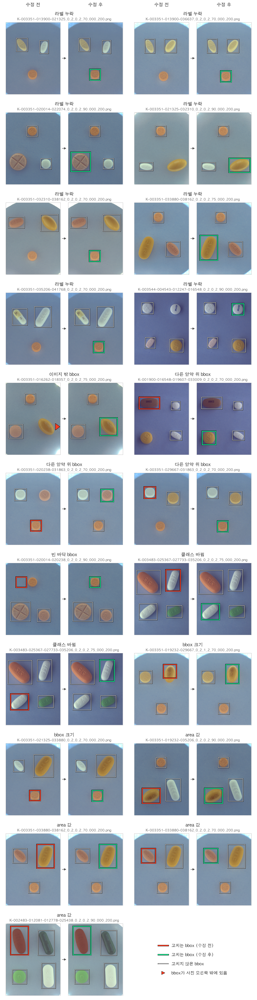

1
/
0
1차 EDA
제공 데이터 232장, 그중 8%에서 라벨 오류를 찾아 고쳤습니다.
JSON 763개를 전수 검사했습니다. 원본은 그대로 두고
고친 내용을 CSV에 기록
해 사본을 만듭니다.
232장 · 56종
제공 학습 데이터
21개
고친 bbox (추가 8, 수정 13)
19장 (약 8%)
오류가 있던 사진
+0.018
라벨 정제 효과 (YOLO26s Kaggle)

▦
← →/Space 이동 · N 노트 · Esc 목차
SPEAKER NOTES